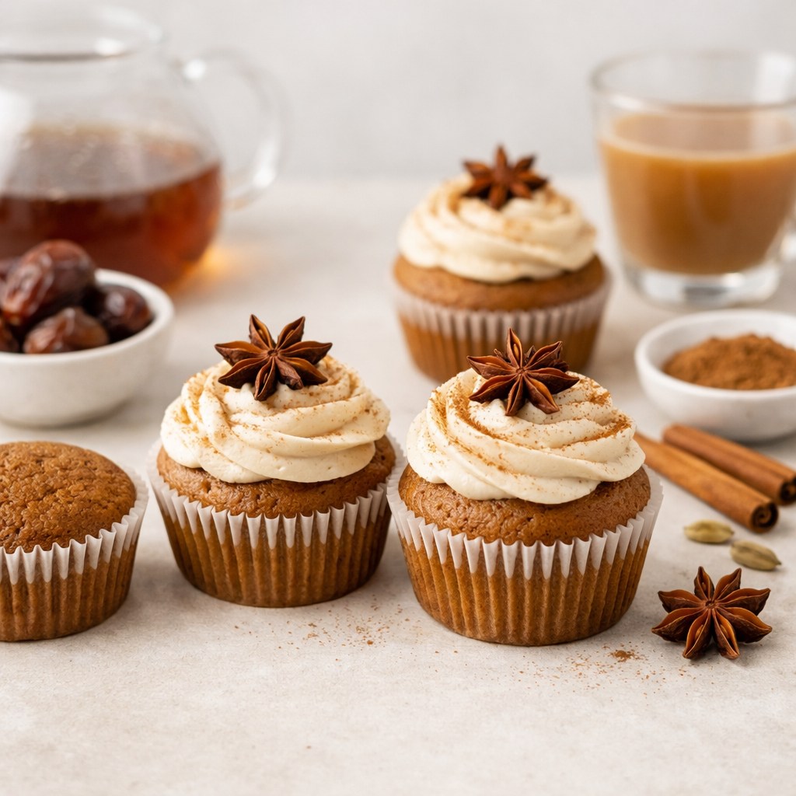

Plants 2 the Rescue
All Recipes
Whole-food, plant-based, simple nourishment.

Rainbow Avocado Chickpea Power Bowl
Colorful, satisfying and packed with fiber and protein.

Hearty Lentil & Mushroom Shepherd’s Pie
Comfort food made with wholesome, everyday ingredients.

Baked Apple Cinnamon Oat Cups
Perfect for breakfast or a grab-and-go snack.

Cranberry Covenant Cake
A tart-sweet, whole-food vegan cake.

Lemon Cloud Cups
Bright, creamy, and surprisingly rich, simple and refreshing.

Smoky Lime Potato Al Pastor Skillet
Smoky, citrusy, and caramelized—bold Mexican-inspired potatoes with zero oil.

Persimmon–Tahini Covenant Cake
A Middle Eastern–inspired cake that’s vegan, oil-free, sugar-free, and naturally sweet.

Persian Walnut & Cardamom Cookies
Soft, fragrant Persian-inspired cookies made with walnuts, cardamom, and natural sweetness.

Indonesian Nutmeg Comfort Pudding
Warm, cozy Indonesian-inspired pudding with nutmeg as the star.

Rustic Italian Chestnut & Vanilla Tart
Earthy roasted chestnuts, soft vanilla warmth, subtle citrus, and a delicate rice-paper crust.

Vegan Eggnog Holiday Cake
Moist, cozy, warmly spiced vegan eggnog cake for Christmas and winter gatherings.

Sugar-Free Vegan Eggnog
Creamy, cozy, dairy-free nog sweetened naturally with dates.

Vegan Matcha Green Tea Pudding
Creamy, gently sweet matcha pudding that’s vegan, oil-free, and refined-sugar-free.
Chai-Spiced Vegan Cupcakes
Vegan • Oil-Free • Sugar-Free — warm chai flavor with date-sweetened goodness.

Date Energy Bars
A simple whole-food energy bar powered by dates, oats, and nuts.

Vegan Orange Spanish Rice
Spanish-style rice with Brazilian orange sunshine.

Decadent Grapefruit Cheesecake
Bright, creamy, and citrus-forward cheesecake with a classic cashew option and a nut-free alternative.

Mind-Blowing Lemon Dream Pie
Ultra-creamy cashew version + optional nut-free lemon silk version.

Lime Bliss Donuts
Baked donuts bursting with fresh lime brightness.